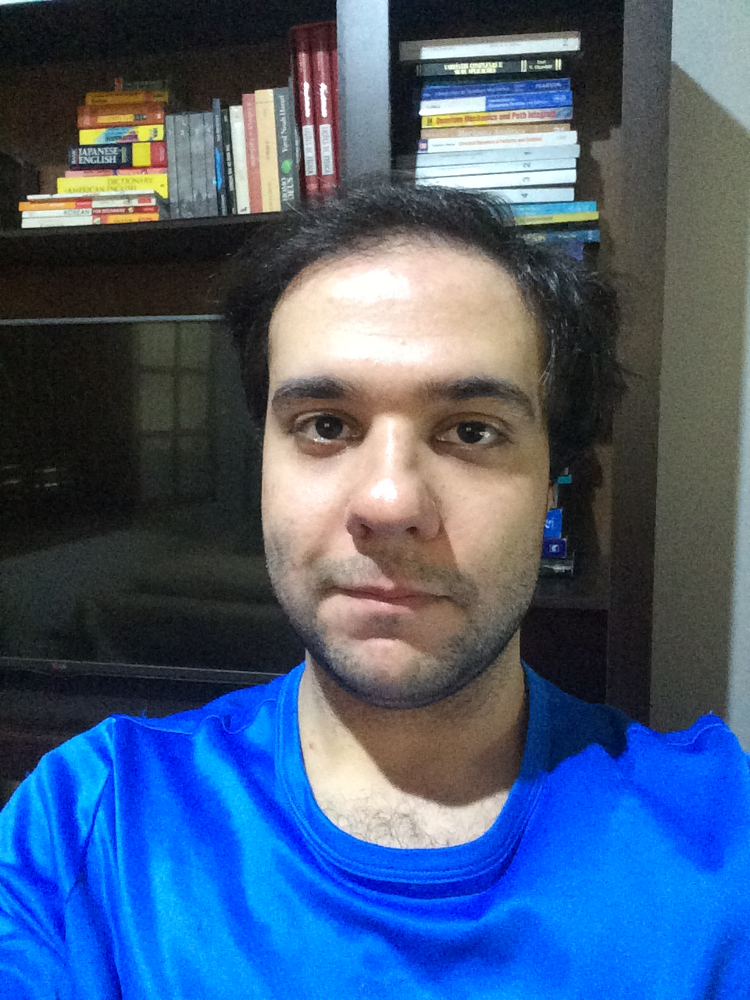

Estudando Desenvolvimento Web na Trybe
Mineiro e residente de Belo Horizonte (2021), Bacharel em Física pela Universidade Federal de Minas Gerais, sempre fui muito curioso e investigativo, gosto de saber como as coisas funcionam. Comecei a mexer com programação ainda criança, modificando meus jogos favoritos, e criando servidores deles.
Quando jovem montei vários servidores utilizando dessas (e outras) tecnologias
Mas foi só durante meu tempo de graduação na UFMG que aprendi formalmente princípios teóricos da Ciência da Computação, foi também quando quebrei a cabeça para compreender Programação Orientada a Objetos
Mais tarde na UFMG tive a oportunidade de conhecer e operar sistemas Linux durante meu tempo no laboratório
Recentemente vinha experimentando criação de softwares com interface gráfica usando o Visual Studio
Nos próximos meses estarei aprendendo HTML,CSS, e JavaScript na Trybe
Quando criança era de uma equipe americana de Age of Mythology, tive que me virar e aprender inglês sozinho do que me orgulho muito
Gosto de quebrar a cabeça com problemas difíceis e do eventual momento Eureka deles
Sem dúvidas a habilidade mais importante que amadureci durante minha Graduação em Física
Sempre quando começo a me adaptar ao uso de uma nova tecnologia que estou estudando começa também um sentimento rebelde de querer forçar os limites (do meu conhecimento e) da tecnologia, muitas vezes quebrando meu computador ou o servidor no processo e tendo que restaurar um backup, e algumas poucas vezes com resultados interessantes
Sempre aprendendo novas coisas, nunca satisfeito
Sempre trabalhei sozinho ou em equipes bem pequenas com amigos, quero melhorar minhas habilidades comunicativas e ser capaz de integrar qualquer equipe